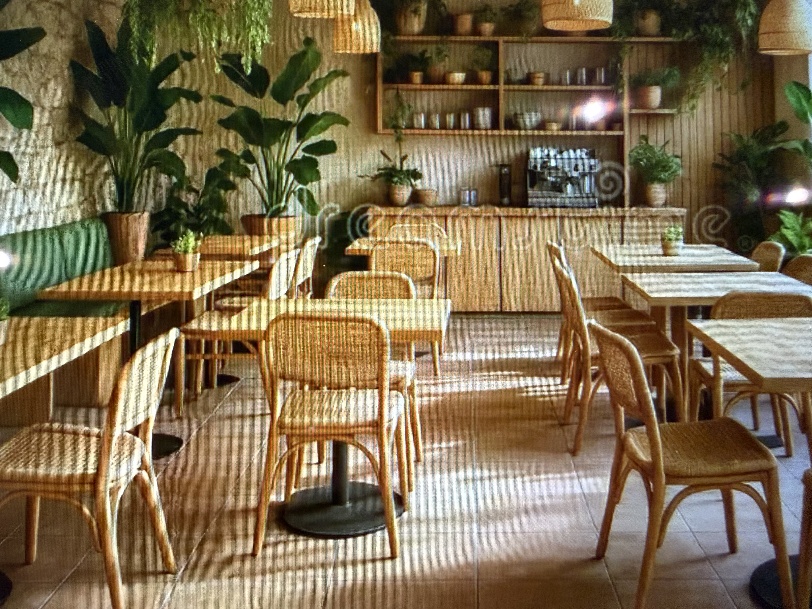
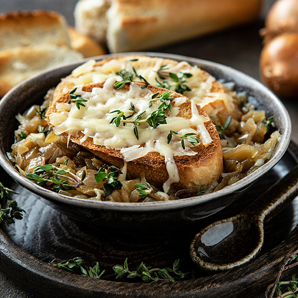
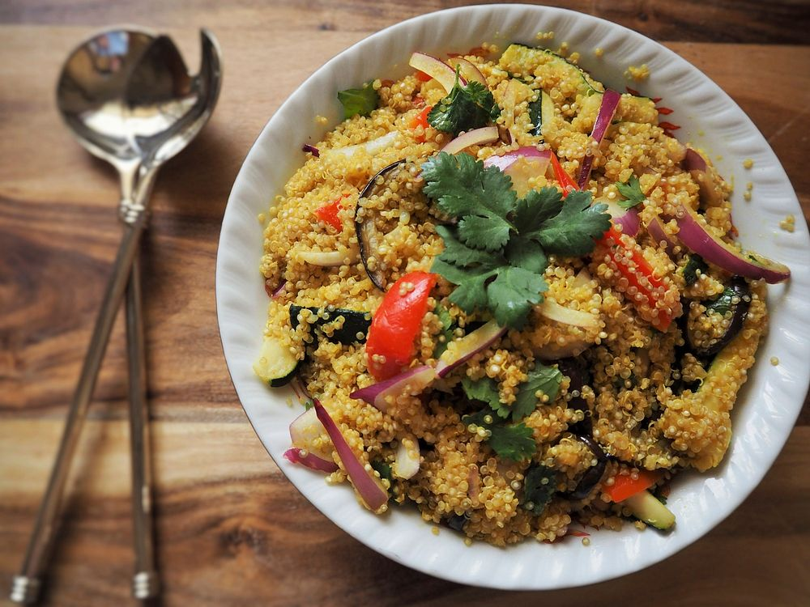
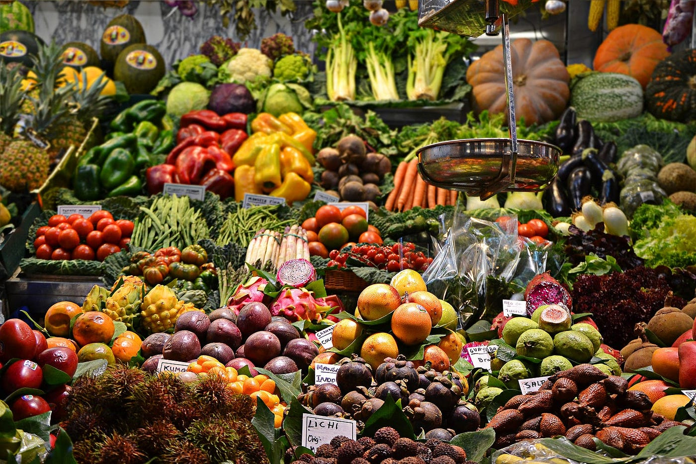
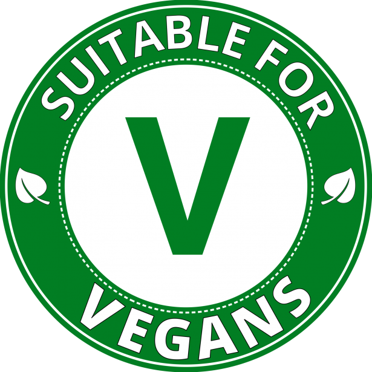

Naturally Bristol
Here at Naturally Bristol we have a deep belief in all things natural and all things Vegan.



About Us
Our Story: Roots by the River
A Bright Space in the Heart of the Harbour
Your Riverside Sanctuary
Breakfast

Lunch
Dinner Contact Us
Contact Us
Vegan Friendly.....

Naturally.....
